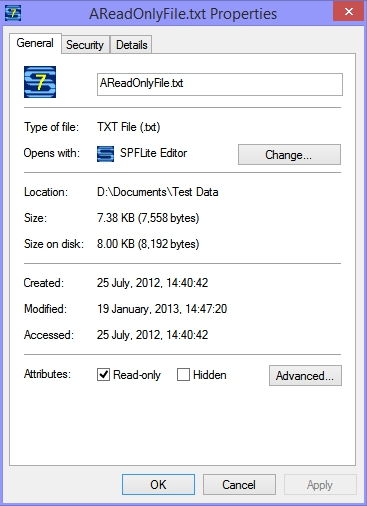

Working with Read Only Files
Contents of Article
Determining that a file has the Read Only attribute
Accessing Read Only files from the SPFLite File Manager
Editing Read Only files from an SPFLite Edit or Browse window
Actions taken during END or SAVE
Actions taken during Rename or Delete
Actions requiring Windows Explorer or other external intervention
SPFLite will respect the Read Only attribute of a file. Because this action takes place automatically, there is not a lot for you to do, except to understand the process SPFLite uses to handle Read Only files.
Determining that a file has the Read Only attribute
From the Windows Explorer
When Explorer displays a list of files, you can see the Read Only attribute (among other things) if you add the Attributes column heading to the display. To do that, right-click on the Explorer heading line on some empty area, and a box of heading types will appear; click on Attributes. This column does not typically appear by default, unless you have made a global change to Explorer to have every file display contain this heading.
To see the properties dialog for a particular file, where you can both display and change the Read Only attributes, right-click on the file name, and select Properties. You should see various attribute check-boxes, including Read Only. Here is a sample Windows Explorer display:

Accessing Read Only files from the SPFLite File Manager
When a file contains a Read Only attribute, the File Manager will change the line-command field for that file, so that it displays as dots instead of underscores. This is a "flag" to remind you that you are dealing with a Read Only file. Here is a sample File Manager display:

If you click on a file name, or use the File Manager line commands E (Edit) or S (Select), SPFLite normally will open an Edit session for the selected file. When the file has a Read Only attribute, the file will be opened in a View session rather than an Edit session. SPFLite detects the Read Only attribute and automatically switches the action from Edit to View. The first box of the Status Bar will, instead of simply showing View will say RdOnly. Technically, this is only a cosmetic matter. You are actually still in View mode. The reason for changing the indicator is so you won't forget why you are in Browse mode - it's because the file was found to be a Read Only file.

Editing Read Only files from an SPFLite Edit or Browse window
If you issue the EDIT primary command from an existing Edit or Browse session, SPFLite detects the Read Only attribute and automatically switches the action from Edit to View. You will get the same message here as you would when trying to edit a file from the File Manager.
SPFLite does not currently support Read Only files participating in Multi-Edit sessions. If you want to use a Read Only file within MEDIT, you must remove the Read Only attribute, or copy the file to another name, and ensure that the copy of the file is not Read Only.
Actions taken during END or SAVE
If you attempt to SAVE a Read Only file, the command will be rejected with an error message. If you have made changes to the file, these changes will not be saved during END. Instead you will see a popup message asking you to continue the END operation without saving. Yes is the same as a CANCEL command, and No causes the END to be ignored and you are returned to the Read Only browse screen. This is done regardless of the AUTOSAVE options currently in effect.
Actions taken during Rename or Delete
SPFLite will not allow you to rename or delete a Read Only file, and will issue an error message informing you of that. This applies to the Delete and Rename line commands (D and R) in File Manager, as well as the RENAME and CANCEL DELETE or CANCEL PURGE primary edit command.
Actions requiring Windows Explorer or other external intervention
During the design phase for respecting the Read Only attribute of files, consideration was given for allowing Delete and Rename capabilities, perhaps with a warning popup message, as well as the ability to set and clear the Read Only attribute from File Manager. However, if it's too easy to circumvent the protection, it can be almost as bad as not having any protection at all. As a result, the decision was made not to allow this.
Because of that, in order to provide the most protection for these files, if you have to take these actions, you will have to do so outside of SPFLite, and use the Windows Explorer or a command line prompt to rename or delete a Read Only file, or modify the Read Only attribute of a file.
Created with the Personal Edition of HelpNDoc: Produce online help for Qt applications